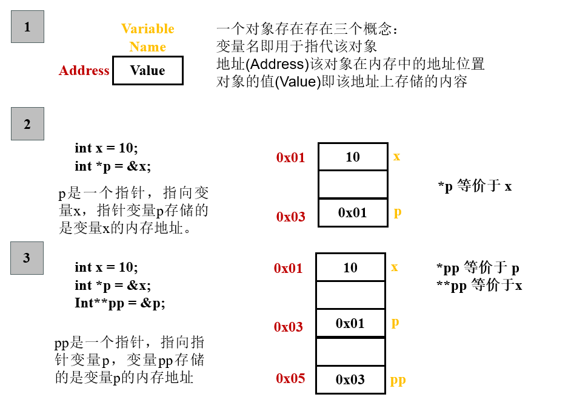
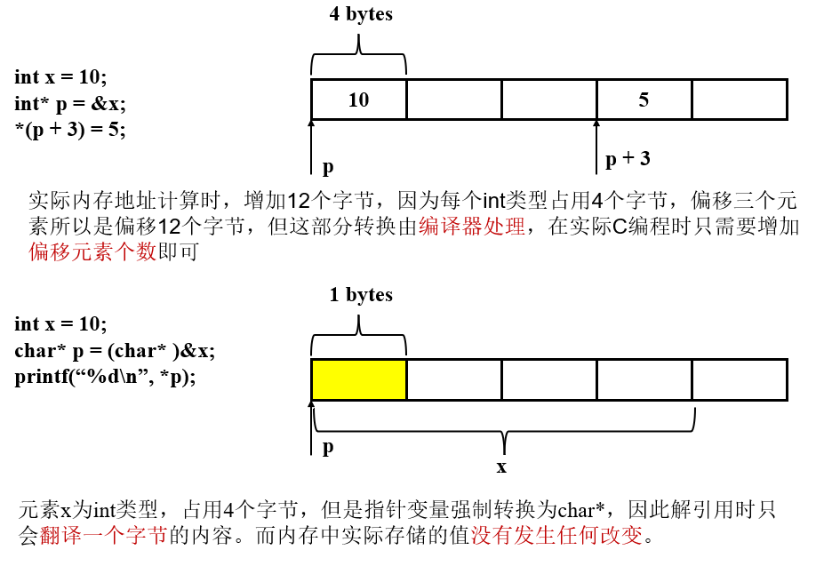

指针(Pointers)
指针的概念是C编程语言的核心特征，它提供了一种统一的方式引用不同类型的数据结构。
指针的一些原则
- 每个指针都有关联的数据类型
int* p1; // 指针 p1 指向的是一个int类型
int** p2; // 指针 p2 指向的是一个 int* 类型

-
void *是C语言中的泛型指针，不包含任何类型信息，使用前需要手动类型转换 -
指针通过取地址运算符
&实现 -
指针通过
*运算符解引用 -
数组名和指针可以等价替换
// *(arr + 1) 等价于 arr[1]
int arr[5];
int* p;
- 强制类型转换指针类型不会改变内存中实际存储的值，只会改变地址计算的缩放因子以及解引用的字节大小

- 指针也可以指向函数，函数指针的值是第一条指令的内存地址，在C编程中函数名就是函数的地址
int add(int x, int y);
int (*fp)(int, int); // 函数指针
// int* fp(int, int); 就不是一个函数指针，*会优先和int结合，表示一个函数原型
fp = add;
fp(1, 2);
泛型指针
考虑一个实际问题，我们希望在一个数组中找出最大值，该数组可以是int类型数组、double类型数组以及char*数组。
初步的解决方式
- 为每一个类型编写一个寻找最大值的函数
- 分别调用相应的函数实现最大值寻找
#include <stdio.h>
#include <string.h>
int find_int_max(int arr[], size_t n){
int max = arr[0];
for(int i = 1; i < n; i++){
if(arr[i] > max)
max = arr[i];
}
return max;
}
double find_double_max(double arr[], size_t n){
double max = arr[0];
for(int i = 1; i < n; i++){
if(arr[i] > max)
max = arr[i];
}
return max;
}
char* find_string_max(char* arr[], size_t n){
char* max = arr[0];
for(int i = 1; i < n; i++){
if(strcmp(arr[i], max) > 0)
max = arr[i];
}
return max;
}
int main(){
int arr1[] = {1, 10, 5, 4, 6};
double arr2[] = {2.2, 4.3, -5.3, 9.8, 18.8};
char* arr3[] = {"apple", "green", "blue", "red", "yellow"};
int max_int = find_int_max(arr1, sizeof(arr1) / sizeof(arr1[0]));
printf("Int max is %d\n", max_int);
double max_double = find_double_max(arr2, sizeof(arr2) / sizeof(arr2[0]));
printf("Double max is %f\n", max_double);
char* max_string = find_string_max(arr3, sizeof(arr3) / sizeof(arr3[0]));
printf("String max is %s\n", max_string);
return 0;
}
- 输出内容如下：
Int max is 10
Double max is 18.800000
String max is yellow
利用泛型指针void *解决代码冗余
void *指针可以接收任意类型的指针void *指针不包含任何类型信息，无法进行指针运算char * p指针p+1表示内存地址增加一个字节
#include <stdio.h>
#include <string.h>
void* gfind_max(void* arr, size_t elemSize, size_t n, int (*cmpFunc)(const void*, const void*)){
void* max = arr;
for(int i = 1; i < n; i++){
// 利用 char* 可以进行逐字节移动内存地址
// void* 无法进行指针运算
if(cmpFunc((char*)arr + i * elemSize, max) > 0)
max = (char*)arr + i * elemSize;
}
return max;
}
int cmp_int(const void* p1, const void* p2){
int a = *(int*)(p1);
int b = *(int*)(p2);
if(a > b) return 1;
else if (a < b) return -1;
else return 0;
}
int cmp_double(const void* p1, const void* p2){
double a = *(double*)p1;
double b = *(double*)p2;
if(a > b) return 1;
else if(a < b) return -1;
else return 0;
}
int cmp_string(const void* p1, const void* p2){
char* a = *(char**)p1;
char* b = *(char**)p2;
return strcmp(a, b);
}
int main(){
int arr1[] = {1, 10, 5, 4, 6};
double arr2[] = {2.2, 4.3, -5.3, 9.8, 18.8};
char* arr3[] = {"apple", "green", "blue", "red", "yellow"};
int max_int = *(int *)gfind_max(arr1, sizeof(int), sizeof(arr1) / sizeof(arr1[0]), cmp_int);
printf("Int max is %d\n", max_int);
double max_double = *(double *)gfind_max(arr2, sizeof(double), sizeof(arr2) / sizeof(arr2[0]), cmp_double);
printf("Double max is %f\n", max_double);
char* max_string = *(char**)gfind_max(arr3, sizeof(char*), sizeof(arr3) / sizeof(arr3[0]), cmp_string);
printf("String max is %s\n", max_string);
return 0;
}
- 输出结果
Int max is 10
Double max is 18.800000
String max is yellow